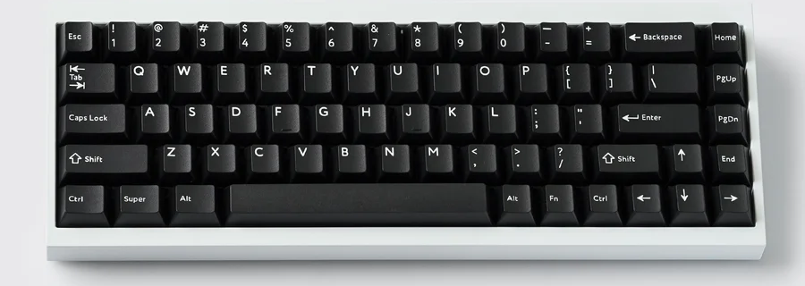

KeyMaker 60% 2.0
Beschrijving
Het toetsenbord Keymaker 60% 2.0 is een prachtig toetsenbord dat mooi en simpel is met niet te veel erop en eraan. Het is een goed toetsenbord om mee te nemen door het lage gewicht en de handige bleutooth functie. Dit toetsenbord komt met Cherry MX red switches die niet te veel geluid maken maar een geweldige tactile gevoel hebben. We hebben onderdelen van VIA gebruikt omdat dit vaak robuste en simpele onderdelen zijn. Overal is dit een mooi simpel toetsenbord voor een mooie simpele prijs.
Onderdelen
- Housing: Moonlight White 60% VIA
- Switches: MX Red Cherry
- Keycaps: Simple Black VIA
- connection: Kabel + Bleutooth